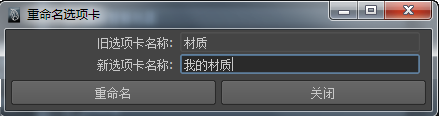

有关 Hypershade 选项卡的详细信息，请参见 Hypershade 浏览器。
-
创建新选项卡(Create New Tab)
-
打开一个窗口，可在其中为要创建的新选项卡设定选项。
- 向左移动选项卡(Move Tab Left)、向右移动选项卡(Move Tab Right)
-
选择一个选项卡，然后选择其中一个选项来向左或向右移动该选项卡。
-
重命名选项卡(Rename Tab)
-
将打开一个窗口，您可以在其中为选定选项卡指定新名称。

-
移除选项卡(Remove Tab)
- 选择一个选项卡，然后选择该选项以移除它。
-
还原为默认选项卡(Revert to Default Tabs)
- 移除新选项卡并还原为默认组织。
-
当前选项卡(Current Tab)
- 如果当前选项卡是磁盘选项卡或默认的“项目”(Projects)选项卡，则有其他选项可用。有关详细信息,请参见“当前选项卡”(Current Tab)选项。